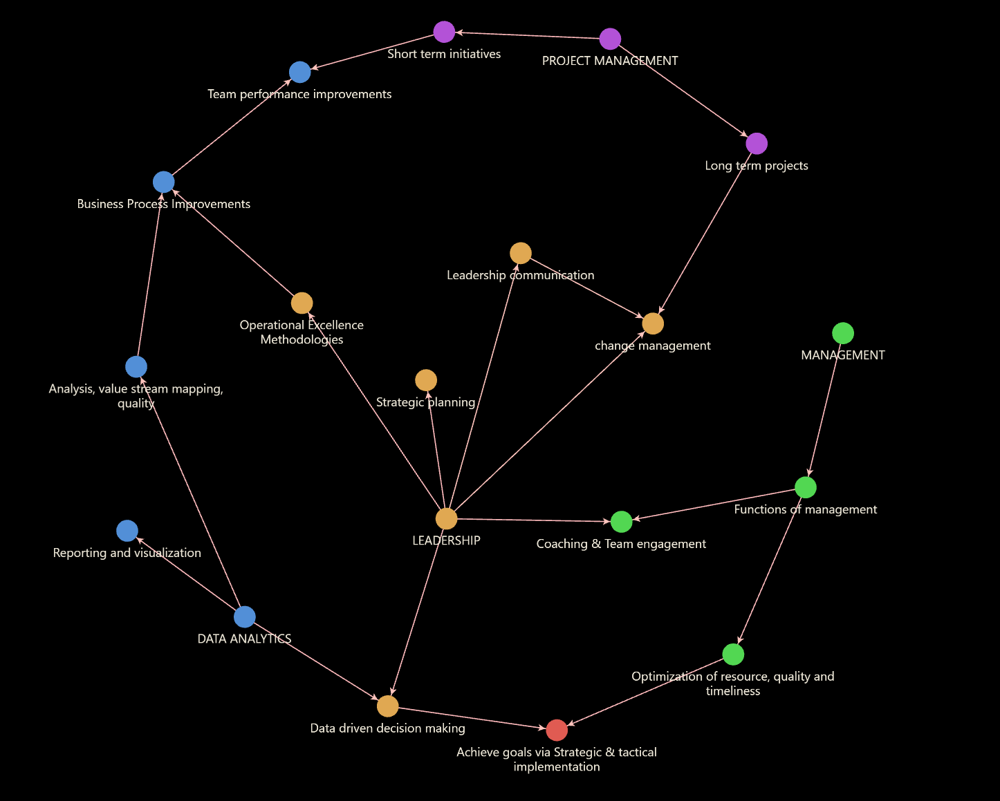

Management Methodology
EMPOWERMENT: Encourages creativity and efficiency
ENGAGEMENT: Ensures authentic two way communication and leadership guidance
ETHICS: Builds trust and team cohesion
"A manager's effectiveness emanates from pragmatic skills, bolstered by the trust of the team, cultivated through their authenticity, and exemplified in their ethical conduct" Used together with the broader skillsets of management,leadership, data analytics and project management, this forms the foundation for success in dynamic managerial environments requiring adaptability at the strategic and tactical level. Achieving corporate goals requires good strategic plans devised by top leadership, comprehensively understood and executed by team managers, and technically implemented by relevant teams on the ground through optimized and effective operations. Data serves as the foundation supporting all layers of decision-making.